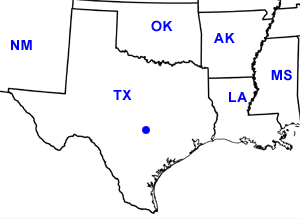

Day Twelve
Austin, TX
Date: 06/22/2002
Distance: 0 miles
Weather: Mostly sunny. 90's
Slept late! Woke up and took a refreshing shower.
Then off to Sears to get the car serviced.
Several hours, two new tires, new front brake rotors, and new brake pads later we have a road worthy car again.
Back home. John's car also had happened to get a flat earlier this week, so with our new found expertise, we changed it lickity split and brought it to Sears. (Please keep your eyes out for new Sears billboards featuring yours truly.)
Went in search of dinner. First place, the Hula Hut had a 2+ hour wait, and it was already 9:00 pm. Instead we went to Rudy's for some good southern style meat. Rudy's is a gas station turned meat market and John and Corin devoured some brisket shaped cow.
Back home to watch the movie Happiness. Corin was the only one who didn't fall asleep, but it was a funny dark comedy. All three were happy to spend the night at home maxin' and relaxin'.